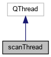
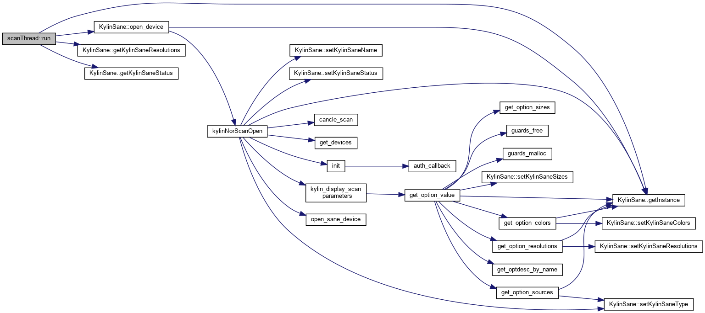

Kylin-scanner API
信号
|
Public 成员函数
scanThread类 参考
#include <
widget.h
>
类 scanThread 继承关系图:

[
图例
]
scanThread 的协作图:
[
图例
]
信号
void
scan_finished
(bool)
Public 成员函数
void
run
() Q_DECL_OVERRIDE
成员函数说明
◆
run()
void scanThread::run
(
)
函数调用图:

◆
scan_finished
void scanThread::scan_finished
(
bool
_t1
)
signal
这是这个函数的调用关系图:
该类的文档由以下文件生成:
src/
widget.h
src/
moc_widget.cpp
src/
widget.cpp
制作者
1.8.17
 1.8.17
1.8.17